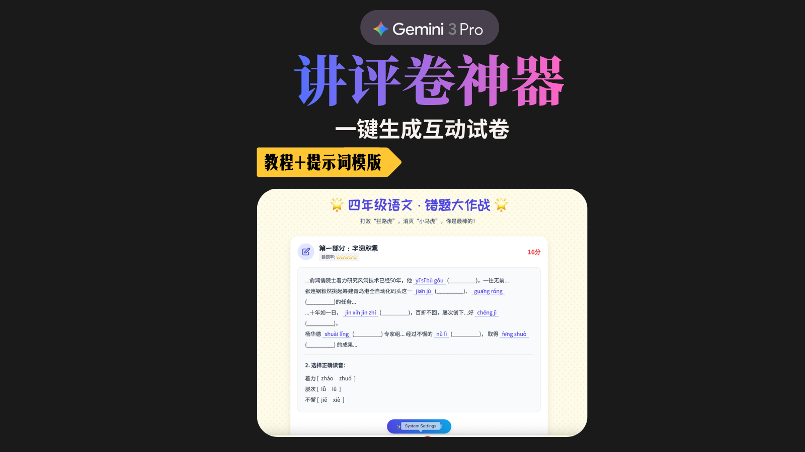

返回灵感实验室
备课与讲评案例 ✦
让枯燥的试卷，变成互动探索讲评课。
这里展示 Joyzhu 对互动备课与试卷讲评形式的实验。案例用于提供设计思路，老师可结合自己的学科内容、学生情况与教学目标进行调整。
首个开放案例 ✦
四下语文 · 互动试卷讲评
将传统试卷内容重新组织为可以浏览、选择与即时反馈的互动页面，帮助学生更主动地回顾题目、理解答案与发现薄弱点。

观看制作教程想制作自己的版本？ ✦
生成同款互动讲评页面的提示词，
在小红书群里领取。
领取后，可以替换成自己的学科、试卷内容与讲评重点，作为制作同类页面的起点。